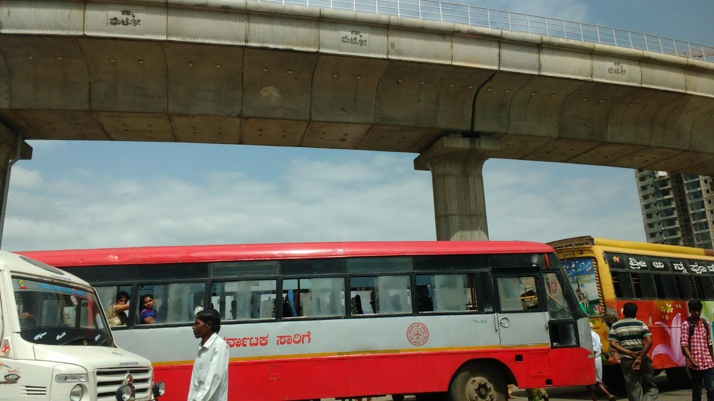
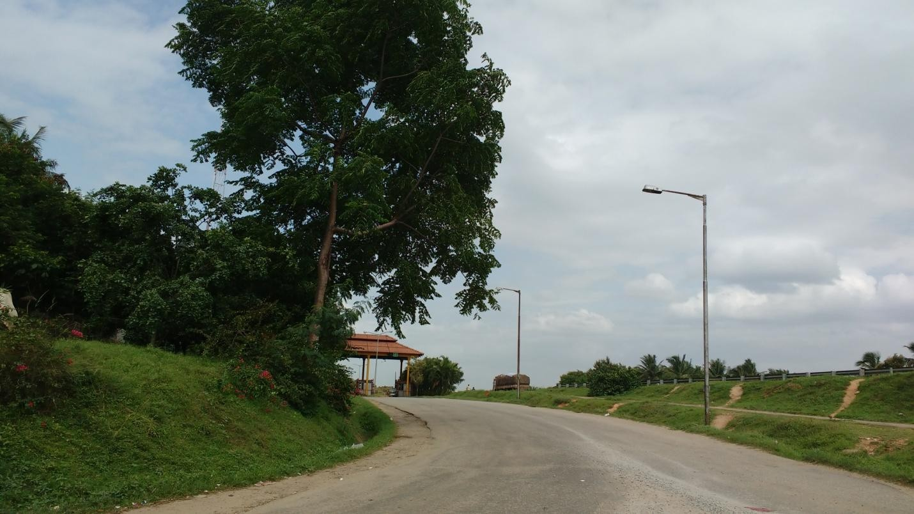
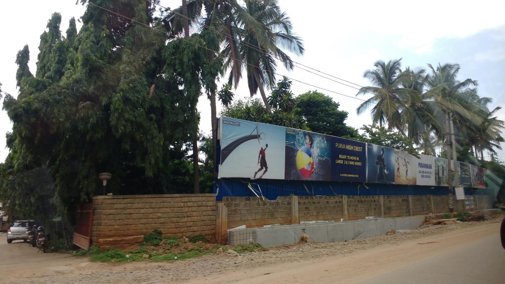
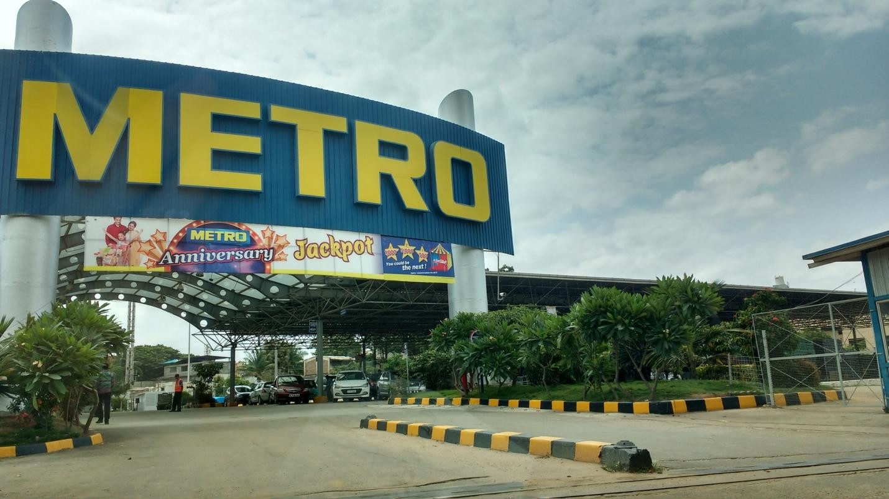
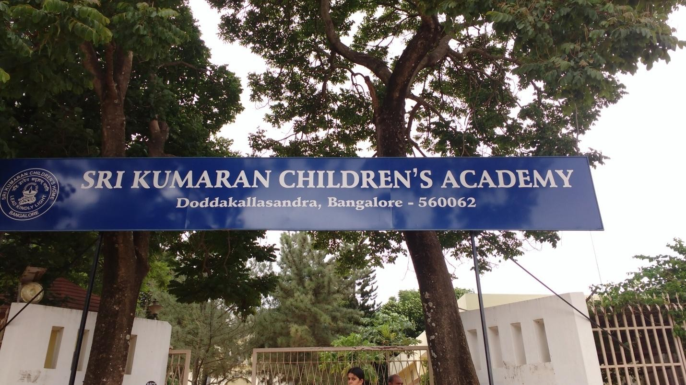

Great Living Engineered
The case for residential investments at Kanakapura road

Under construction Metro-track on Kanakpura Road
In the past, Kanakapura Road was known to Bangalore locals as just a state highway that connected all the towns in South Bangalore to Banashankari. The road connected Mysore and Chamarajanagar districts of Karnataka to Bangalore and often had travelers going to Coimbatore or Erode district on it.The areas around the road were largely inhabited by the farmers. With economic growth fostered by IT/ ITES sector boom in Bangalore Kanakapura Road like several other places in South Bangalore witnessed a trend of urbanization. South Bangalore benefits from proximity to older parts of town and was a natural extension to the city. Today, with its competitive property rates, rapidly improving connectivity and infrastructure development, Kanakapura Road is all about the future.
The road is divided into three main parts- the first is in the heart of South Bangalore in Banashankari; the second is the main part of the road which begins at Outer Ring Road and goes up to Khoday’s factory; the third begins from the factory all the way up to the Art of Living campus and beyond. With gradual growth in Bangalore, Kanakapura Road has seen an upsurge in investments in all forms of real estate. Here are a few reasons for this.
Connectivity

NICE Expressway Toll Booth
Infrastructure development has always been something that Kanakapura Road has a reputation for. The first big demands for properties in Kanakapura Road were driven by the 6.2 km long major metro of the Namma Metro Phase II project in the area. This will connect Puttenhalli to Anjanapura Township and should be up and running in less than two years. The line is expected to make travel from Konakunte to Majestic (which is in central Bangalore) easy. There’s also the Gottigere-Nagwara metro project that is underway on Bannerghatta Road.
A 35 km four lane expressway has been sanctioned by the Bangalore Development Authority to widen the road and connect the area to Tumkuru Road, Hosur Road, Sarjapur Road, Old Madras Road and Magadi Road; nearly all the important business districts of the city. The project is expected to commence this year.
With improvements in the connectivity, the government couldn’t help but invest in setting up public transportation systems. Besides the metro project itself, there are 20 bus stops across Kanakapura Road, the biggest of which is the Banashankari Bus Stop. This bus stop offers connectivity to a lot of areas in South Bangalore JP Nagar, Bannerghatta Road, Banashankari, Jayanagar along with Mysore Road, IT hub- Electronic City and Majestic Bus Depot, which in turn offers connectivity across the city. Buses to International Airport can also be found easily here. This makes the area very favorable to those in IT companies or offices in these areas as well.
The NICE expressway also offers traffic-free routes to several parts of the city including the business district of Electronic City. Besides this, the NHAI proposed road widening project to make the 60 ft wide Kanakapura road to a 150 ft wide four lane road from NICE road to Kanakapura. This development is expected not only to ease peak hour traffic and but also regular commute on this stretch. The extension of NICE road to Mysore serves as a means of further development across the road.
Emerging Residential Corridor

New Residential Developments- Kanakapura Road
Knowing connectivity would never be an issue, Kanakapura caught the development bug from its periphery regions like Konankunte and JP Nagar. When a 400 acre SEZ for Textile and Apparel project went underway- the first of its kind in Karnataka- it added to the economic flavor of the region. Located on Kanakapura Road, about 6 km before Harohalli it is expected to have factories with a total employment of 50,000 workmen and bring an investment of nearly Rs. 1,250 crore.
A real estate saturation in the surrounding markets of Bannerghatta Road, Banashankari, JP Nagar and Jayanagar has been inversely proportional to the investment growth in Kanakpura Road. The latter has been a beneficiary of this trend as people find Kanakapura more open and affordable than others. Prestige, HM Indigo, Godrej, Brigade, Sobha and Vaishnavi are a few of the many real estate developers investing in the area. With start-up culture gaining ground and major MNCs setting up offices in Bangalore, the demand for a residential home away from the crowded part of the city was created and cosmopolitan crowd took over the homes here. Most people opt for Kanakapura Road to stay close to office spaces in Bannerghatta, Silk Board, and Electronic City and with the metro line being both extended and prepped for launch, travelling to the centre of the city isn’t out of the question either.
The area has an easy access to Cauvery water thus addressing the big need of any household.
Infrastructure, Convenience Stores and Social Spaces

Metro Cash and Carry- Kanakapura Road
A good residential area cannot make-do without all the amenities required for ease of living. Apart from Metro Cash and Carry, there are several convenience stores spread across the road like Royal Mart and Shop Here. Food chains like Pizza Hut, Dominos and other restaurants have set up store in the area and apps like FreshMenu and Swiggy also deliver to the area. Besides this Banashankari has its BDA complex that’s known to offer a lot of food options to its visitors.
The importance of healthcare cannot be overlooked, and major hospitals like Fortis, Jayadeva Hospital, Sagar Hospital as well as specialty clinics like VikramOrthapedic Centre are all situated in and around the area. The popular Art of Living campus is frequented by tourists and locals alike and is known for its effective Ayurvedic treatments and its spiritual centre.
Shankara Foundation is known to have regular cultural events to promote classical and folk art forms.
Gopalan Innovation Mall, Meenakshi Mall and Gopalan Mall (Mysore Road) are ideal for movie-nights and shopping sprees. Mysore is a 149.1 km and a 3 hour drive away, via the Mysore Road while Coorg is a 2 hour drive from Mysore. Bylakuppe, which is also known as the Dharamsala of the South or Little Tibet is an hour’s drive (80km approximately) from Mysore. Infact, Roerichs’ 450 acre Tataguni Estate, home and studio of Russian artist Svetoslav Roerich attracts a lot of tourist attention as well.
All eyes are on ISKON, which has decided to launch the Indian version of Disney Land- a 4D Krishna Leela Park on a 28 acre hillock that will provide visitors a 360 degree view of the area from Vaikunta Hill. The project is expected to attract a lot of tourist attention, thus increasing investments in the area.
Emerging Educational Establishments

Kumarans School- Kanakapura Road
Nobody likes sending their kids on long bus rides to school. Kanakapura road has some of the most popular educational institutions along its route, such as the Valley School, which is associated with J Krishnamurti and has traditional values fused with modern-day education.Apart from this Kumarans School is a popular choice with parents in the area. Delhi Public School is situated on Bikaspura main road, and RMS International school is along the road as well.
Higher education institutions like Christ University (Bannerghatta Road, Koramangala) are also easy to travel to from the area and popular colleges like Dayanand Sagar, Jain University, BMS, RNSIT, JSS, RV are all around the area.
Increase In Access To Fresh Air
Contrary to a large part of the city, Kanakapura Road is still quite green with plantations flanking the road and pollution keeping itself in check. The Turahalli forest is located off Kanakapura Road and the Karishma Hills that adorn it (and that it’s alternatively known as) are also the views that grace residents’ balconies. It’s safe to say that despite the growing pollution in the city other-wise, Kanakapura Road has managed to hold its own.
Homes in Kanakapura Road cater to all kinds of needs, from traditional villas to modern duplex homes. Most properties here are gated communities all inclusive of club houses, swimming pools, sport centers and round the clock security and ATMs thus offering residents all the comforts that a home should provide them with.
All these features have led the average price of property in Kanakapura Road to remain steady in 2016, costing about Rs. 4,300-6,000 per sq.ft. (Source: India Real Estate: Residential and Office, Knight Frank) Meanwhile the average rent for a flat is Rs. 10-14 per sq ft per month for a 2 BHK apartment. Besides, prices in Kanakapura Road had risen significantly with the commencement of the NICE Ring Road and the development of the metro rail node, which is expected to be operational in early 2016. (Source: Residential Investment Advisory Report 2016, Knight Frank)
With the region now attracting investments in infrastructure, tourism, real estate development and social sphere, areas along the Kanakapura Road are likely to be big beneficiary of demand for residences in the coming days.
Add ons :
Iskcon, which bought the 28-acre hillock for Rs 23 crore at a public auction, is building what it says is a Disneyland-like 4D technology driven Krishna Lila Park and will transform the tourist potential of Bangalore, Karnataka and India.
ISKON is planning to build a Vaikunta Hill in Kanakapura Road for which land has already been allotted.
Owing to the arrival of a massive tourist hub, property prices in and around Kanakapura Road area are bound to shoot up in the next five years. An acre of land in the area is running at Rs 9-10 crore. Expect a 10% to 15% rise in these prices in the next five years.
Karnataka Approves Gokuldas SEZ.
The Government of Karnataka has approved an exclusive SEZ for apparel and textile, to be set up by the promoters of Gokaldas Exports Ltd. The SEZ would be located on Kanakapura Road (NH 209), about 6 km. before Harohalli. The SEZ would be spread out over 400 acres and a world-class Apparel and Textile Park would be set up. The SEZ would house 50 factories with a total employment of 50,000 workmen and an investment of nearly Rs. 1,250 crore, says a company release.
Proposed kanakpura Road Widening
In order to ease traffic along the stretch, NHAI has proposed to widen the 60ft wide Kanakapura road to a 150ft wide four lane road. Road widening will begin from the NICE road interchange and will end at Kanakapura. Road widening will substantially ease traffic – positively impact the image of the location.
Harohalli Industrial Area by the Karnataka Industrial Areas Development Board will also give a boost to development in the region.
Further extension of NICE Road to Mysore will play crucial role in fueling real estate demand.
Tataguni Estate that sprawls over 450acre is housed on Kanakapura Road attracts tourists.